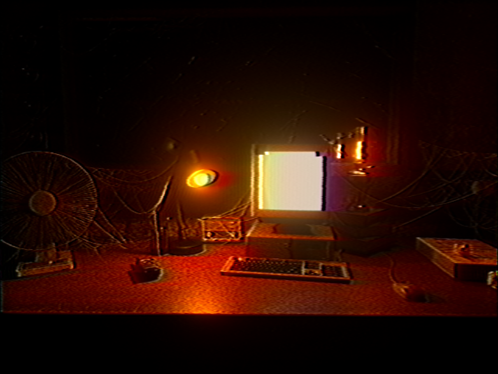
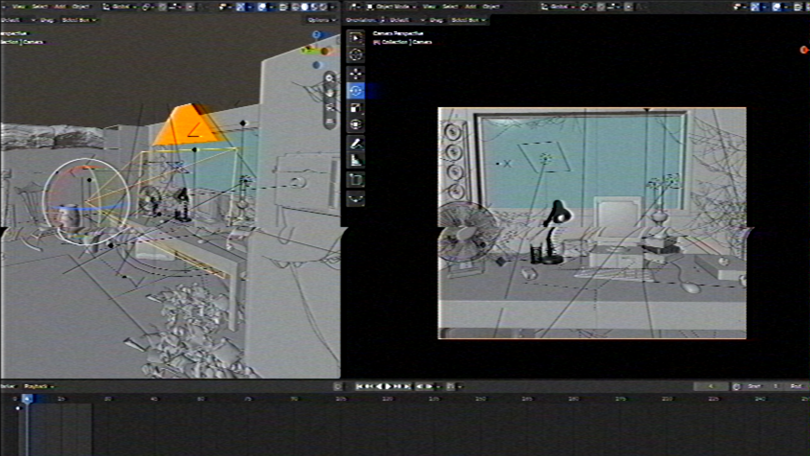
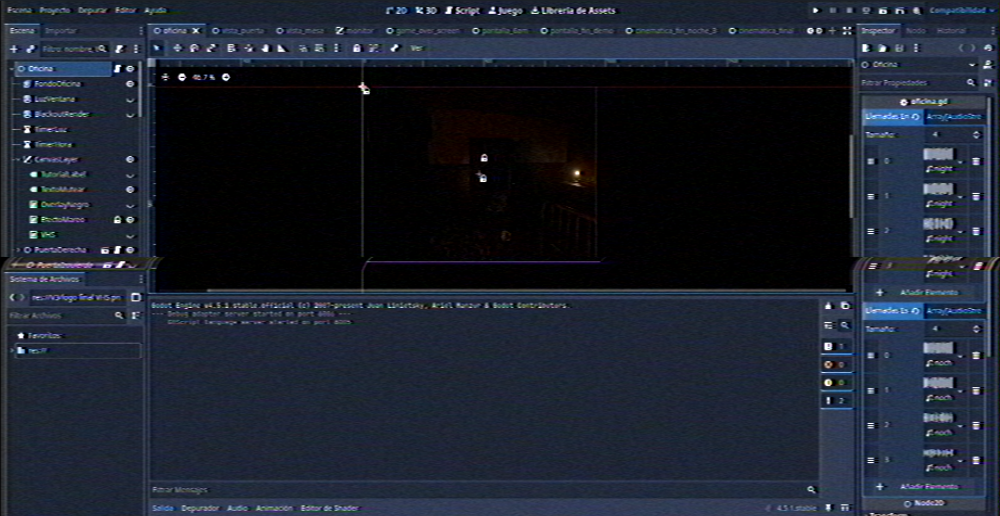
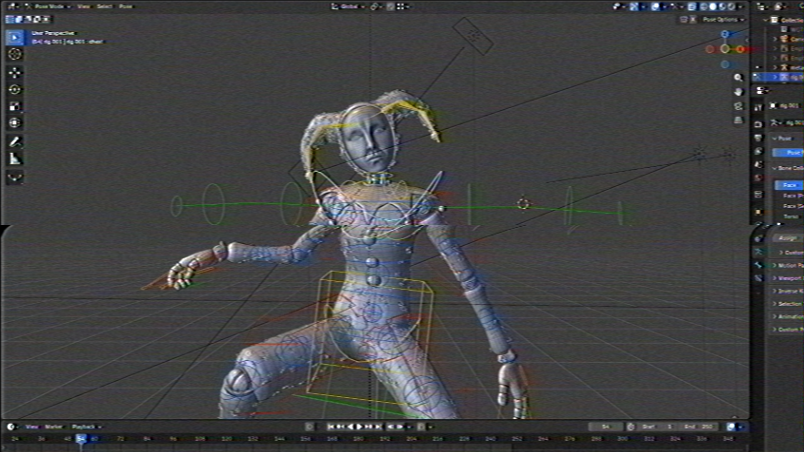

CASE_FILE_19ABB.DOC — [READ ONLY]
CASE_FILE_19ABB.DOC — [READ ONLY]
THE ABANDONED ONES
For 19 years, an isolated property on the outskirts of Arboria County has remained unsold and undemolished. Following repeated civilian reports, Officer Jack Johnson is assigned to a solitary, off-the-record inspection of the premises.
At 23:40 HRS, Officer Johnson reported a concealed subterranean access point before radio contact was lost. Further operational details remain STRICTLY REDACTED by order of the Chief of Police.
| CASE ID: | #19-ABB-TAO |
| JURISDICTION: | Arboria County |
| ASSIGNED: | Ofc. J. Johnson |
| SUPERVISOR: | Chief J. Robbinson |
| RADIO LINK: | SIGNAL LOST |
| BUILD VER: | Pre-Alpha V3 |
| PLATFORMS: | Windows / Android |

- NAME: Jack Johnson
- DOB: June 20, 1968 (Arboria)
- PARENTS: Maria Lopez & Hal Johnson
- EDUCATION: B.S. Robotics Engineering
Lived in Arboria until age 6. Following his father's death and severe childhood amnesia, relocated to Tijuana, Mexico with his mother until age 25. Graduated as a Robotics Engineer before returning to join the Arboria Police Department.



(C) Copyright Arboria County Police Dept. All rights reserved.
STATUS: DATABASE ENCRYPTED. CLEARANCE CODES PENDING DEPLOYMENT.